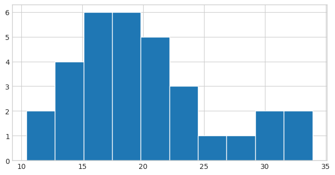
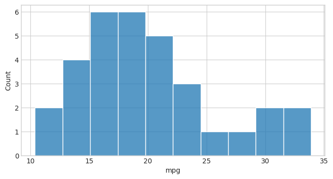
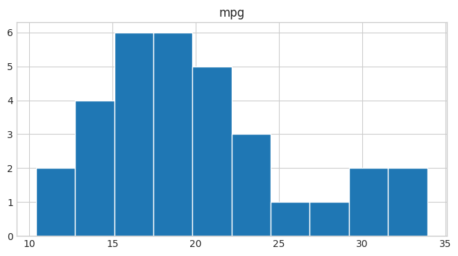
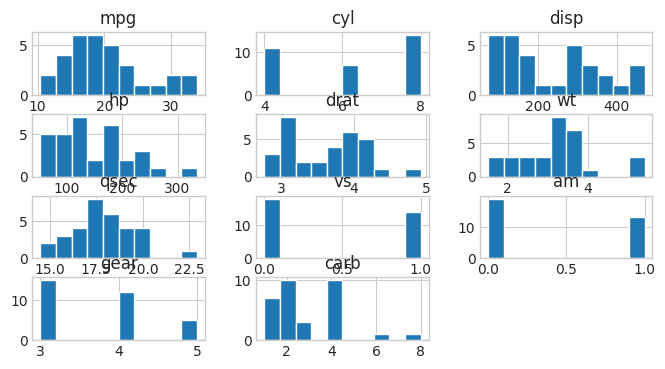
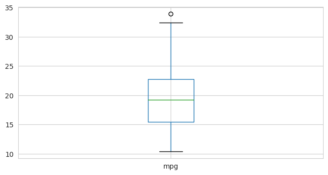
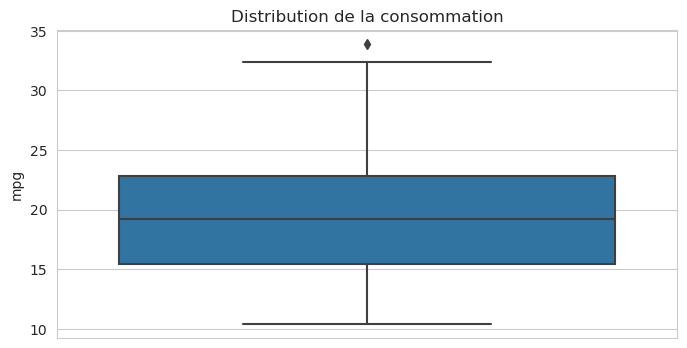

Solution: Pandas Stats - les bases#
On utilisera le dataset mtcars qui comprend 32 observations sur 11 variables :
mpg Miles/(US) gallon
cyl Number of cylinders
disp Displacement (cu.in.)
hp Gross horsepower
drat Rear axle ratio
wt Weight (1000 lbs)
qsec 1/4 mile time
vs Engine (0 = V-shaped, 1 = straight)
am Transmission (0 = automatic, 1 = manual)
gear Number of forward gears
carb Number of carburators
import warnings
warnings.simplefilter(action='ignore', category=FutureWarning)
import pandas as pd
import matplotlib.pyplot as plt
import seaborn as sns
%matplotlib inline
from matplotlib import rcParams
rcParams['figure.figsize'] = 8, 4
sns.set_style('whitegrid')
cars = pd.read_csv("../../data/mtcars.csv")
# TODO : Afficher les 5 premières lignes du dataframe `cars`
cars.head()
| model | mpg | cyl | disp | hp | drat | wt | qsec | vs | am | gear | carb | |
|---|---|---|---|---|---|---|---|---|---|---|---|---|
| 0 | Mazda RX4 | 21.0 | 6 | 160.0 | 110 | 3.90 | 2.620 | 16.46 | 0 | 1 | 4 | 4 |
| 1 | Mazda RX4 Wag | 21.0 | 6 | 160.0 | 110 | 3.90 | 2.875 | 17.02 | 0 | 1 | 4 | 4 |
| 2 | Datsun 710 | 22.8 | 4 | 108.0 | 93 | 3.85 | 2.320 | 18.61 | 1 | 1 | 4 | 1 |
| 3 | Hornet 4 Drive | 21.4 | 6 | 258.0 | 110 | 3.08 | 3.215 | 19.44 | 1 | 0 | 3 | 1 |
| 4 | Hornet Sportabout | 18.7 | 8 | 360.0 | 175 | 3.15 | 3.440 | 17.02 | 0 | 0 | 3 | 2 |
# TODO : Afficher le nombre de valeurs non nulles et le type de chaque variable
cars.info()
<class 'pandas.core.frame.DataFrame'>
RangeIndex: 32 entries, 0 to 31
Data columns (total 12 columns):
# Column Non-Null Count Dtype
--- ------ -------------- -----
0 model 32 non-null object
1 mpg 32 non-null float64
2 cyl 32 non-null int64
3 disp 32 non-null float64
4 hp 32 non-null int64
5 drat 32 non-null float64
6 wt 32 non-null float64
7 qsec 32 non-null float64
8 vs 32 non-null int64
9 am 32 non-null int64
10 gear 32 non-null int64
11 carb 32 non-null int64
dtypes: float64(5), int64(6), object(1)
memory usage: 3.1+ KB
Fonctionnalités statistiques de base#
Ecart type & Variance#
# TODO: Calculer l'écart type de chacune des colonnes du dataframe `cars`
cars.std(numeric_only=True)
mpg 6.026948
cyl 1.785922
disp 123.938694
hp 68.562868
drat 0.534679
wt 0.978457
qsec 1.786943
vs 0.504016
am 0.498991
gear 0.737804
carb 1.615200
dtype: float64
# Calculer la variance de chacune des colonnes du dataframe `cars`
cars.var(numeric_only=True)
mpg 36.324103
cyl 3.189516
disp 15360.799829
hp 4700.866935
drat 0.285881
wt 0.957379
qsec 3.193166
vs 0.254032
am 0.248992
gear 0.544355
carb 2.608871
dtype: float64
Statistiques descriptives#
# TODO : Afficher les statistiques descriptives de base pour l'ensemble des variables numériques
cars.describe()
| mpg | cyl | disp | hp | drat | wt | qsec | vs | am | gear | carb | |
|---|---|---|---|---|---|---|---|---|---|---|---|
| count | 32.000000 | 32.000000 | 32.000000 | 32.000000 | 32.000000 | 32.000000 | 32.000000 | 32.000000 | 32.000000 | 32.000000 | 32.0000 |
| mean | 20.090625 | 6.187500 | 230.721875 | 146.687500 | 3.596563 | 3.217250 | 17.848750 | 0.437500 | 0.406250 | 3.687500 | 2.8125 |
| std | 6.026948 | 1.785922 | 123.938694 | 68.562868 | 0.534679 | 0.978457 | 1.786943 | 0.504016 | 0.498991 | 0.737804 | 1.6152 |
| min | 10.400000 | 4.000000 | 71.100000 | 52.000000 | 2.760000 | 1.513000 | 14.500000 | 0.000000 | 0.000000 | 3.000000 | 1.0000 |
| 25% | 15.425000 | 4.000000 | 120.825000 | 96.500000 | 3.080000 | 2.581250 | 16.892500 | 0.000000 | 0.000000 | 3.000000 | 2.0000 |
| 50% | 19.200000 | 6.000000 | 196.300000 | 123.000000 | 3.695000 | 3.325000 | 17.710000 | 0.000000 | 0.000000 | 4.000000 | 2.0000 |
| 75% | 22.800000 | 8.000000 | 326.000000 | 180.000000 | 3.920000 | 3.610000 | 18.900000 | 1.000000 | 1.000000 | 4.000000 | 4.0000 |
| max | 33.900000 | 8.000000 | 472.000000 | 335.000000 | 4.930000 | 5.424000 | 22.900000 | 1.000000 | 1.000000 | 5.000000 | 8.0000 |
Distribution#
Documentation : pandas.Series.value_counts
# Afficher le nombre de valeurs différentes dans la colonne gear
cars.gear.value_counts()
3 15
4 12
5 5
Name: gear, dtype: int64
# TODO: Afficher le nombre de voitures ayant plus de 4 carburateurs (colonne 'carb')
cars[ cars['carb'] > 4 ].shape[0]
2
Histogramme#
Il est courant d’analyser la distribution d’une variable en utilisant un histogramme. les librairies matplotlib ou seaborn vous le permettent aisément :
Voir la documentation matplotlib
# TODO: Tracer l'histogramme de distribution des différentes valeurs de la
# colonne 'mpg' du dataframe 'cars' en utilisant la librairie 'matplotlib'
plt.hist(cars.mpg, bins=10);

Voir la documentation seaborn
# TODO : Tracer l'histogramme de distribution des différentes valeurs de la
# colonne 'mpg' du dataframe 'cars' en utilisant la librairie 'seaborn'
sns.histplot(cars.mpg, bins=10);

# TODO : Tracer l'histogramme de distribution des différentes valeurs de la
# colonne 'mpg' du dataframe 'cars' en utilisant pandas
cars.hist(column="mpg", bins=10);

Voir la documentation de pandas
# TODO : Tracer les histogrammes des différentes variables
# du dataframe 'cars' en utilisant pandas
cars.hist();

Boxplot#
Les boxplots (boîtes à moustache) sont une représentation alternative. Elles représentent
les valeurs min et max
la valeur médiane
les quartiles 25% et 75% (\(Q_1\) et \(Q_3\))
les valeurs « aberrantes », par convention les valeurs au delà de \(1.5 \times (Q_3 - Q_1)\)
# TODO : Tracer une boîte à moustache pour la variable mpg
# du dataframe 'cars' en utilisant cars.boxplot
cars.boxplot(column="mpg")
<Axes: >

# TODO : Tracer une boîte à moustache pour la variable mpg
# du dataframe 'cars' en utilisant sns.boxplot
ax = sns.boxplot(data=cars, y="mpg")
ax.set_title("Distribution de la consommation")
Text(0.5, 1.0, 'Distribution de la consommation')
